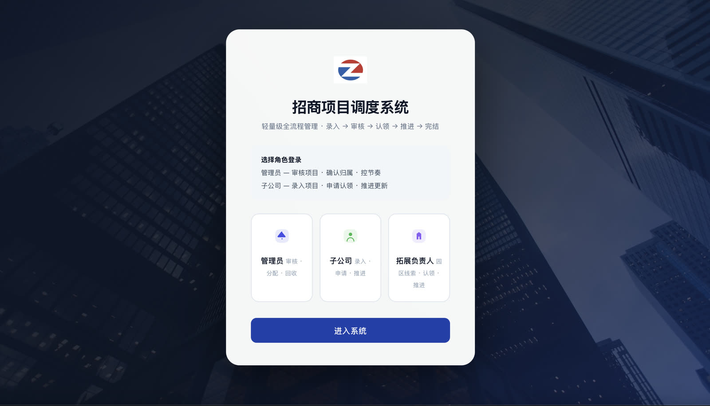
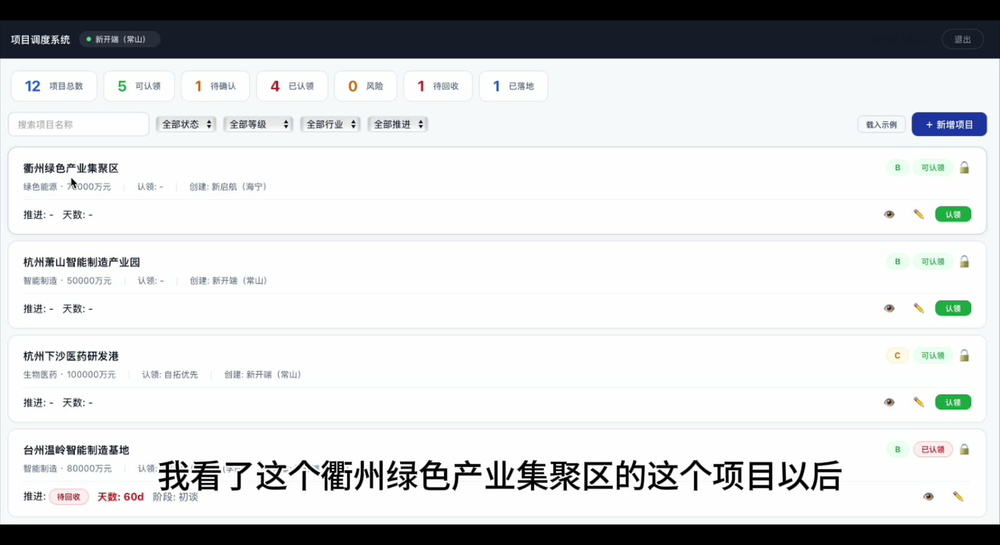
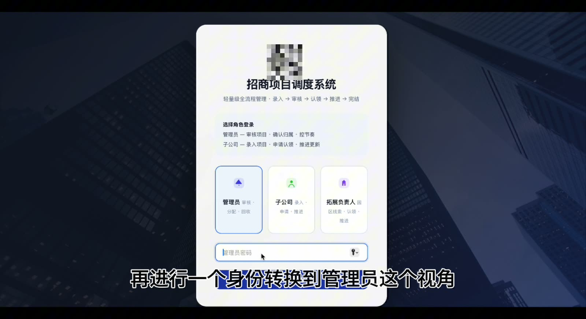
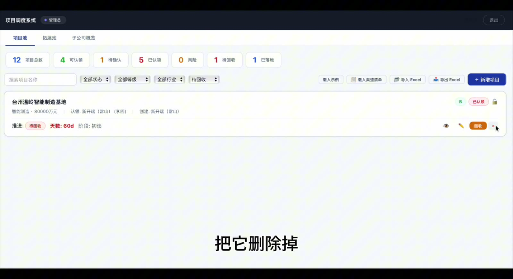

01 · Project Pool
项目池：先看清，再分配
集中呈现项目总数、可认领、待确认与风险状态，并支持按行业、项目等级和推进情况筛选。
01 · 业务问题
信息不缺，缺的是一条能持续往下走的链路。
招商项目会在多个角色之间流转。项目信息、载体条件、认领人和最近跟进如果分散在不同表格与聊天记录里，管理者很难快速判断：现在卡在哪一步，谁应该接手，哪些项目需要优先处理。
原型没有追求堆叠功能，而是先把招商业务中最重要的动作固定下来：谁录入、谁审核、谁认领、何时推进、如何完结。项目池与拓展池分开，项目与园区载体各自拥有清晰的管理路径。
沉淀行业、属地、投资规模与业务需求。
确认项目等级、开放范围与归属关系。
记录负责人、认领时间与推进责任。
更新阶段、意向、跟进记录与风险状态。
标记落地或失效，保留可回看的过程信息。
而是把真实业务流程翻译成可验证的信息结构、状态规则与交互路径，为后续产品化建立可靠底座。
以下截图来自现有原型。案例只陈述页面中能够确认的交互与业务规则，不把它包装成已经量产的 SaaS。

集中呈现项目总数、可认领、待确认与风险状态，并支持按行业、项目等级和推进情况筛选。

园区线索独立维护区域、类型、面积、合作阶段与负责人。

从待确认到已认领，再到推进和完结，关键上下文留在同一条记录里。

根据项目停留天数提示需跟进、风险与待回收，帮助管理者优先处理异常。
Scope & Evidence
这是一个基于真实工作场景制作的可交互验证原型。它用于说明业务理解、信息架构和交互实现能力，不用于暗示生产使用规模。
Try the prototype
原型使用虚构示例数据，已隔离于真实业务数据。你可以查看项目池、切换拓展池、打开详情并体验状态流转。